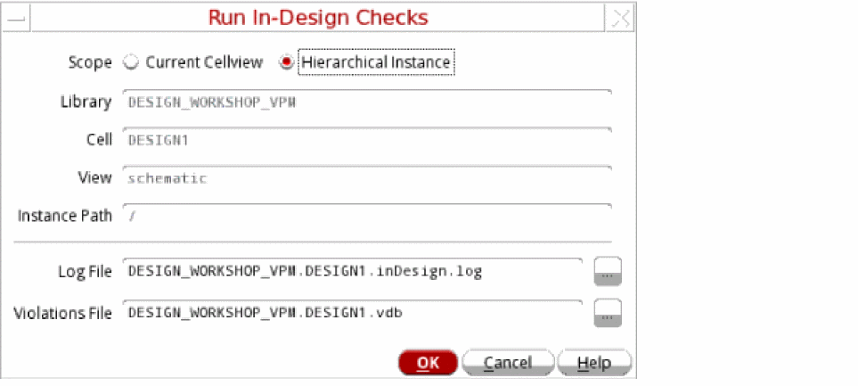
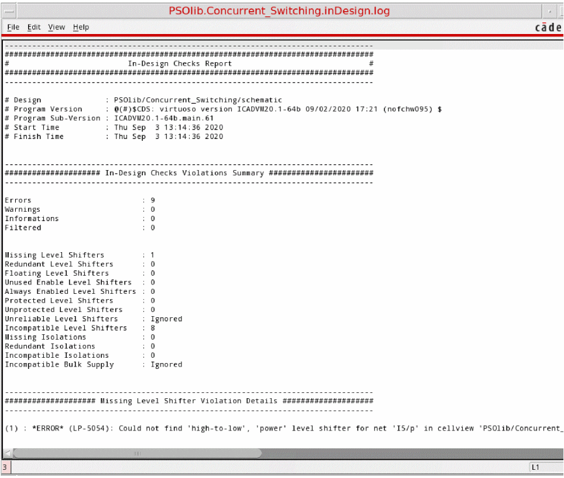

Checking a Design in Foreground Mode
To run the In-Design Checks in foreground mode, perform the following steps:
- Load the setup in the Power Manager Setup form.
-
Choose Power Manager – Run In-Design Checks. The Run In-Design Checks form is opened.
 -
Select the appropriate value for the Scope field. The Library, Cell, View, and Instance Path are read-only fields.
You should choose the Current Cellview option in the following scenarios:- You have a Power Manager setup for the specific design. The setup includes specific information for the design, such as supply states, supply nets, net voltage, and so on.
- You want to validate the complete design.
If you are making changes to a part of an existing design and you want to know how the changes in the hierarchy affect the accuracy of the design within that sub-hierarchy, you can validate a portion of the design by choosing the Hierarchical Instance option in the following scenarios:- You have a Power Manager setup for the top-level design, which includes all relevant information about supply states, supply nets, net voltage, and so on.
- You want to descend to the lower-level cell and want the scope of the design checks limited to the hierarchy of the lower cell and its interface connections.
-
Click OK. An
inDesign.logfile, such as the one shown here, appears.

Related Topics
Defining the Severity of Design Checks
Checking a Design in Background Mode
Loading the Violations Database
Return to top